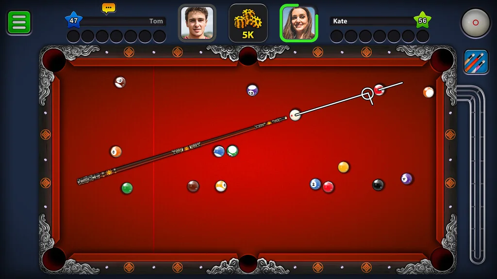
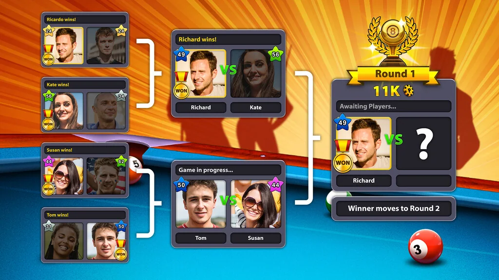
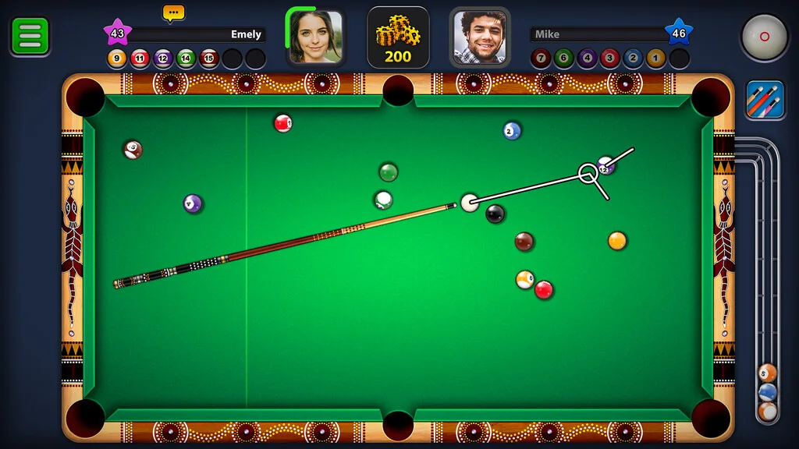
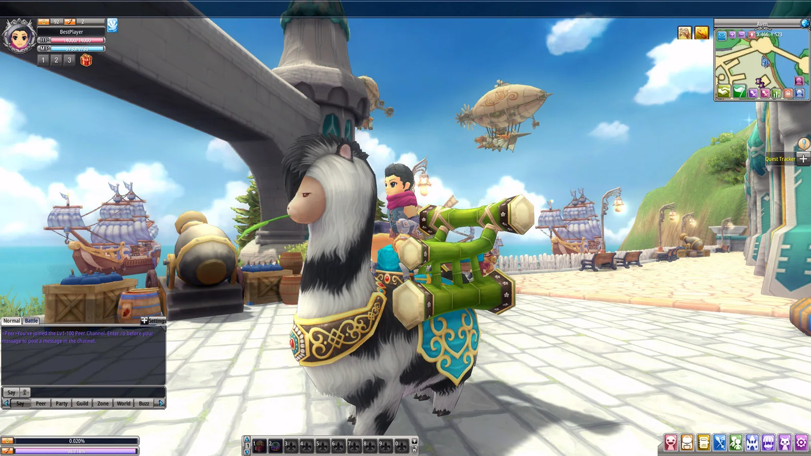
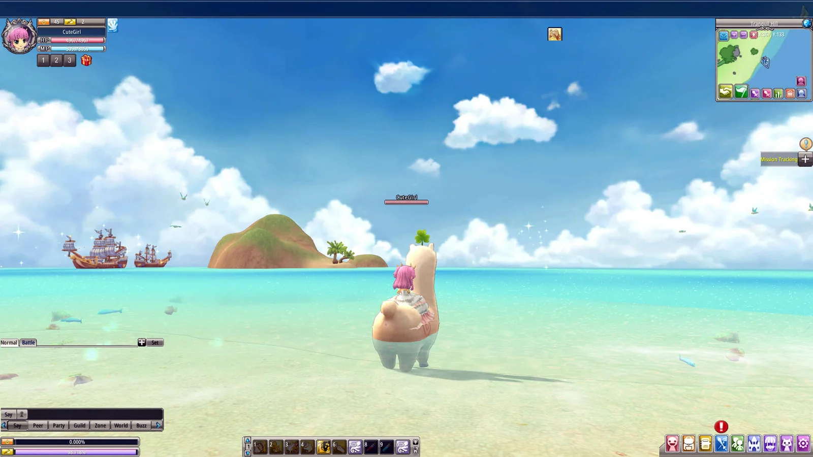
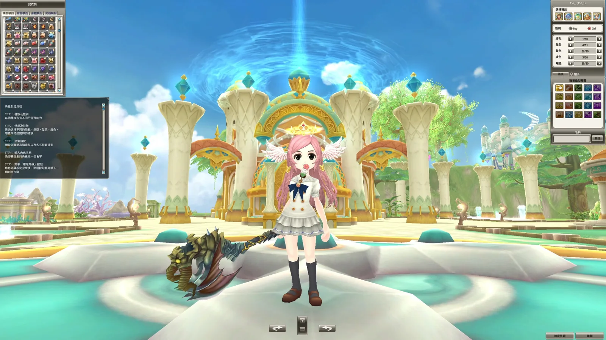
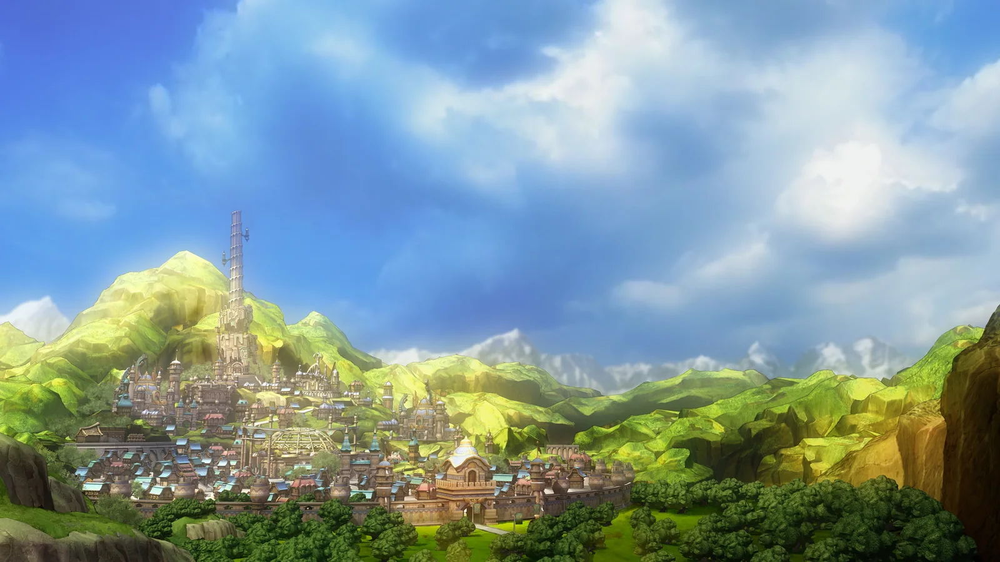
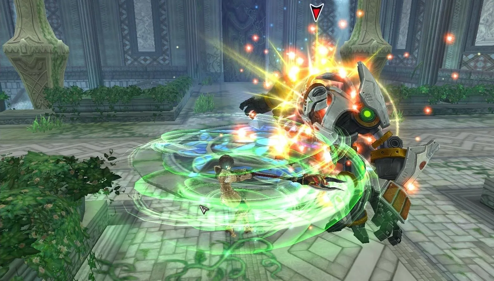
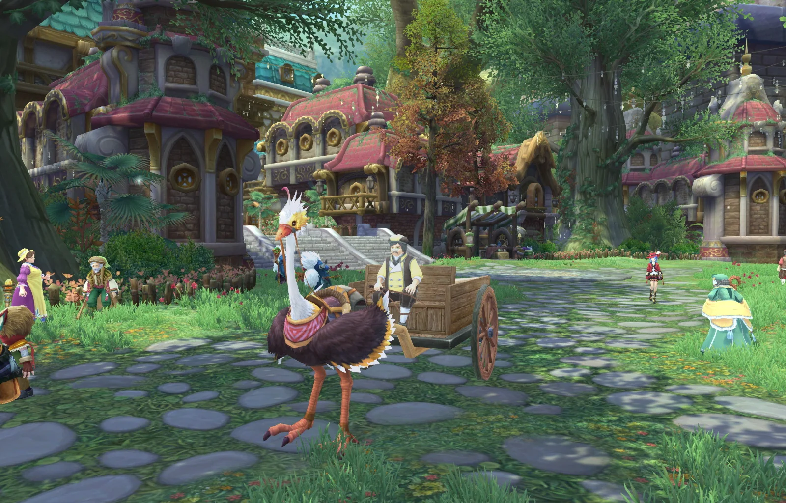

Craps
LiveA live, studio-streamed version of the classic dice game, introduced by Evolution in 2020.
Evolution · Live dice game
Craps
A live, studio-streamed version of the classic dice game, introduced by Evolution in 2020.
Official page ↗10+ YEARS IN THE GAMES INDUSTRY
From community and in-game events on online MMORPGs, to Live Operations on one of the most downloaded mobile games, to building live casino game shows today.
Product Owner
Product development for live casino games across multidisciplinary teams, as the bridge between stakeholders and development — managing and mentoring a development team along the way.
A live, studio-streamed version of the classic dice game, introduced by Evolution in 2020.
Evolution · Live dice game
A live, studio-streamed version of the classic dice game, introduced by Evolution in 2020.
Official page ↗A lottery and bingo-style ball game streamed live, combining cards with drawn balls and multipliers.
Evolution · Lottery and bingo-style game
A lottery and bingo-style ball game streamed live, combining cards with drawn balls and multipliers.
Official page ↗Two bowls, each with a coin that has a Red Dragon and a Gold Dragon side. Players predict whether the coins land both red, both gold or different, then the dealer shakes each bowl and reveals the result.
Evolution · Live coin game · game show
Two bowls, each with a coin that has a Red Dragon and a Gold Dragon side. Players predict whether the coins land both red, both gold or different, then the dealer shakes each bowl and reveals the result.
Official page ↗A modern live version of the ancient bead game: players predict how many beads remain after the dealer divides them into groups of four. Launched in 2021.
Evolution · Classic Asian bead game
A modern live version of the ancient bead game: players predict how many beads remain after the dealer divides them into groups of four. Launched in 2021.
Official page ↗A bingo-style live game show that brings in familiar board-game features such as dice rolls, Chance cards and Go To Jail spaces.
Evolution · Bingo-style live game show
A bingo-style live game show that brings in familiar board-game features such as dice rolls, Chance cards and Go To Jail spaces.
Official page ↗A live game with three physical dice and six colours, inspired by a traditional Filipino carnival game. Launched in 2025.
Evolution · Colour-prediction dice game
A live game with three physical dice and six colours, inspired by a traditional Filipino carnival game. Launched in 2025.
Official page ↗Product Manager · Live Operations
Live Operations for two mobile games: events, promotions, roadmaps and international teams, including work with Tencent and Asian development teams, plus tools that sped up event management.
Online pool against players worldwide. It started as a browser game and reached iOS and Android in 2013, passing 1 billion downloads.



Miniclip · Online multiplayer pool · mobile and web
Online pool against players worldwide. It started as a browser game and reached iOS and Android in 2013, passing 1 billion downloads.
Official page ↗A real-time PvP air combat game, developed by Tencent and launched in the West by Miniclip on iOS and Android in 2017. The store listing has since been removed.
Miniclip · Real-time aerial combat · mobile
A real-time PvP air combat game, developed by Tencent and launched in the West by Miniclip on iOS and Android in 2017. The store listing has since been removed.
Press article (2017) ↗Game Master · Online Games
Customer support, QA, in-game events, community communication, promotions and player feedback for online games.
A fantasy MMORPG developed by X-Legend. The Aeria/Gamigo service closed in April 2021; X-Legend relaunched the game on Steam in 2023.



Aeria Games · Free-to-play MMORPG · PC
A fantasy MMORPG developed by X-Legend. The Aeria/Gamigo service closed in April 2021; X-Legend relaunched the game on Steam in 2023.
Steam page ↗An anime-style fantasy MMORPG by X-Legend. When the Aeria Games portal closed in 2023, publishing moved to the developer and the game stayed online.



Aeria Games · Anime-style MMORPG · PC
An anime-style fantasy MMORPG by X-Legend. When the Aeria Games portal closed in 2023, publishing moved to the developer and the game stayed online.
Steam page ↗Game names, artwork and screenshots belong to their respective owners (Evolution, Miniclip, Tencent, X-Legend) and are shown only to illustrate the games I worked on. Images come from the games' official pages and store listings, except War Wings, whose listing was removed (image from a 2017 PocketGamer.biz article). The work described is limited to what appears in my CV.